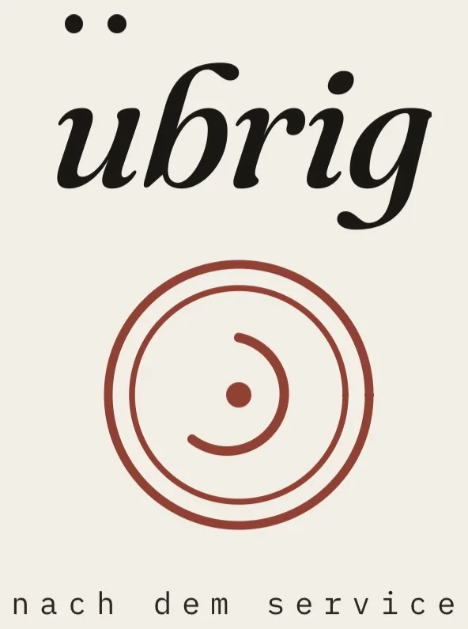

Bärn Kit
Kleine Werkzeuge für Bern, ohne TrackingBärn Kit
Projekte

Was in der Küche übrig bleibt, sicher weitergeben statt wegwerfen. Freigabe, Etikett, Protokoll.AnzeigeDrehen mit dem Finger, Tippen öffnet. Pfeiltasten am Desktop.
Karten
Nächster Punkt zu Fuss, der Standort bleibt im GerätBern TrinkwasserAlle Brunnen der Stadt
Barrierefrei BernWC, Brunnen und Bänke, rollstuhlgängig
Bücherschränke BernOffene Bücherschränke auf der Karte
Gärten BernFamiliengärten und Gemeinschaftsgärten
Grillstelle BernGrill- und Feuerstellen, Waldbrandgefahr
Kreislauf BernGive-Boxen, Brockis, Secondhand
Recycling BernSammelstellen für Glas, Alu, Kleider
Sitzbank BernWo kann ich als Nächstes sitzen
Spielplatz plusSpielplatz, Wasser, WC in einer Karte
GoodPlaceToGoHofladen, Café und Restaurant in der Nähe
Alltag in Bern
Mit Quelle und PrüfdatumAare Bern jetztWassertemperatur und Abfluss, live
Neu in BernDie ersten 30 Tage, mit Frist und Quelle
Wohnung finden in BernWo suchen, was ins Dossier, welche Rechte
Deutsch lernen in BernGratis und günstig, mit Quelle
Gratis BernWas in Bern nichts kostet
Märit-Kalender BernWelcher Markt ist heute offen
Dis JahrgangsbaumDein Baum aus dem Berner Baumkataster
Küche und Balkon
Aus der Berufspraxis eines KochsSaisonkalender BernWas jetzt aus der Region Saison hat
Reste-Küche40 Rezepte aus dem, was da ist
Haltbar oder nicht?MHD ist kein Wegwerfdatum
Balkon für BienenWas jetzt blüht, was jetzt gesät wird
Vereinsfest-KücheCheckliste Lebensmittelsicherheit
Drucken und aufhängen
Ausfüllen, drucken, nichts wird gesendetNotfallblattEin Blatt für den Kühlschrank
Bärn hilftErste Hilfe für Bern
Allergen-Poster14 Allergene, ein Poster
Sicher feiernCodewort, K.O.-Tropfen, sicher nach Hause
Treppenhaus-ZettelIch kann helfen mit … / Ich bräuchte Hilfe bei …
Quellen und Organisationen
Alle Stellen, auf die die Projekte direkt verlinken, mit dem Projekt, das sie nenntaare.guru (Existenz)
- aare.guruAare Bern jetzt
BAFU Hydrologie
BAG
Bern Integral Plus
- bern-integral-plus.ch/deutschkurseDeutsch lernen in Bern
Defikarte
- www.defikarte.chBärn hilft
Gratis ins Museum
- gratisinsmuseum.chGratis Bern
HEV Bern
- www.hev-bern.ch/news/detail/News/formularpflicht-wird-sofort-eingefuehrtWohnung finden in Bern
isa Bern
- isabern.ch/kurse-sprachnachweis/sprachfoerderungDeutsch lernen in Bern
Kanton Bern, Kurs-Finder
- www.weiterbildung-kurse.apps.be.ch/sprachkursDeutsch lernen in Bern
Kanton Bern, Lebensmittelkontrolle
Kanton Bern, Naturgefahren
Kanton Bern, Zivilrecht
- www.zsg.justice.be.ch/de/start/themen/zivilrecht/mietrecht/mietzins-nebenkosten.htmlWohnung finden in Bern
KulturLegi (Caritas)
- www.kulturlegi.ch/kanton-bern/ueber-uns/kulturlegi-kanton-bernDeutsch lernen in Bern, Gratis Bern
Mieterinnen- und Mieterverband
- www.mieterverband.ch/news/faq-formular-mitteilung-anfangsmietzinsNeu in Bern, Wohnung finden in Bern
Nachbarschaft Bern
- www.nachbarschaft-bern.chNeu in Bern, Treppenhaus-Zettel
OpenStreetMap
- www.openstreetmap.org/copyrightBarrierefrei Bern, Bern Trinkwasser, Bücherschränke Bern, Gärten Bern, Gratis Bern, Grillstelle Bern, Kreislauf Bern, Recycling Bern, Sitzbank Bern, Spielplatz plus
Serafe
- www.serafe.ch/deNeu in Bern
Sportamt Bern
- www.sportamt-bern.ch/sportanlage/marziliGratis Bern
Stadt Bern
- www.bern.chGratis Bern, Sicher feiern
- www.bern.ch/themen/abfall/abfuhr/abfallarten/kehricht-und-kleinsperrgutNeu in Bern
- www.bern.ch/themen/auslanderinnen-und-auslander/deutsch-lernenDeutsch lernen in Bern, Neu in Bern
- www.bern.ch/themen/bildung/schule/eltern-und-schule/faq-anmeldung-kindergarten-basisstufeNeu in Bern
- www.bern.ch/themen/freizeit-und-sport/markte/maerkteinbernMärit-Kalender Bern
- www.bern.ch/themen/sicherheit/pravention/aare-you-safeNeu in Bern
- www.bern.ch/themen/zuzug-umzug-wegzugNeu in Bern
Swiss Resuscitation Council
- www.resuscitation.chBärn hilft
Tierpark Bern
- tierpark-bern.ch/baerenpark/oeffnungszeitenGratis Bern
Wohnbaugenossenschaften Bern-Solothurn
- www.wbg-bern.chWohnung finden in Bern
Zentrum Paul Klee
- www.zpk.org/de/infosGratis Bern